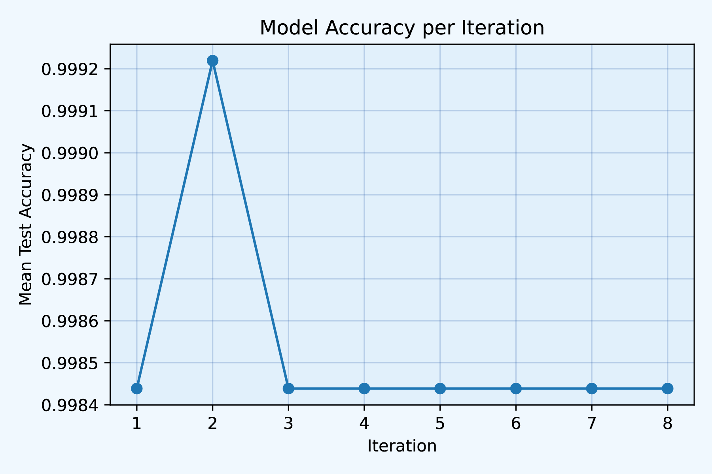
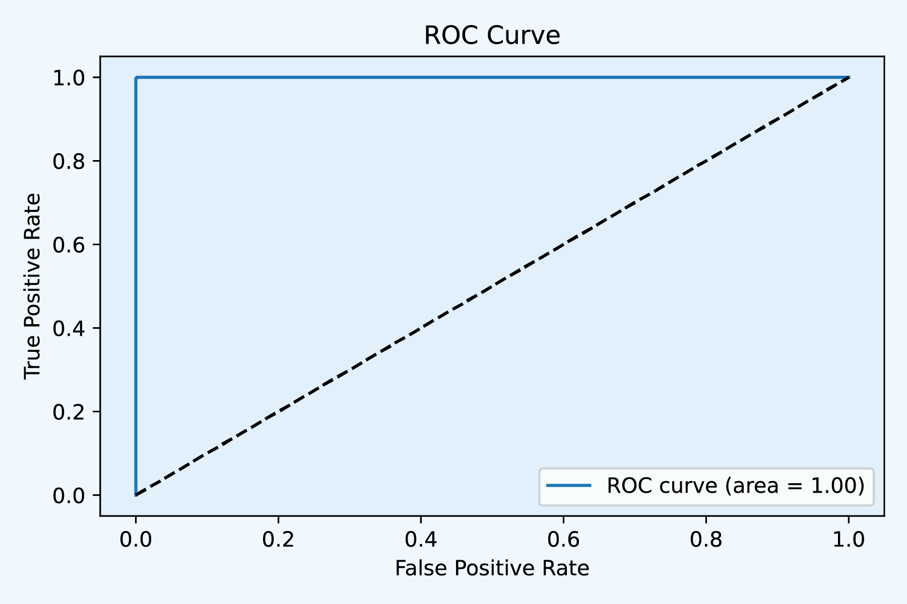
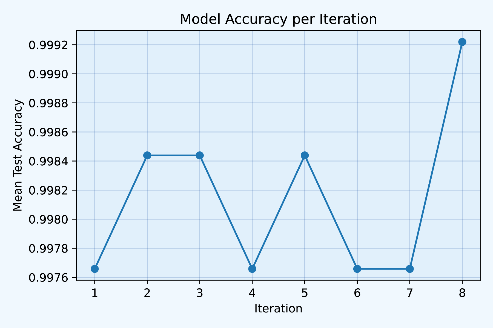

8 AutoFeatureSelection.py
Run the complete analysis pipeline from data loading to training and result extraction in
TransProPy.UtilsFunction3. This function streamlines the process of data handling, feature selection, and model evaluation, providing a comprehensive approach for machine learning pipelines.
8.1 Parameters
- data_file: str:
- Path to the feature data file.
- label_file: str:
- Path to the label data file.
- label_col: str:
- Name of the label column.
- threshold: float:
- Threshold for data preprocessing.
- show_plot: bool:
- Whether to display plot.
- show_progress: bool:
- Whether to show a progress bar.
- n_iter: int:
- Number of iterations for RandomizedSearchCV.
- n_cv: int:
- Number of folds for cross-validation.
- n_jobs: int:
- Number of parallel jobs for RandomizedSearchCV.
- save_path: str:
- Path to save results.
- sleep_interval: int:
- Interval time in seconds for progress bar update.
- use_tkagg: bool:
- Whether to use ‘TkAgg’ backend for matplotlib. Generally, choose True when using in PyCharm IDE, and choose False when rendering file.qmd to an HTML file.
8.2 Please note
If
n_jobs > 1leads to the use of multiprocessing in the function, communication and state sharing between processes become complex. In a multiprocessing environment, each process has its own memory space, and updating the status of the progress bar needs to be done across processes, which can lead to inconsistent or delayed updates. Therefore,if n_jobs > 1or =-1, please setshow_progresstoFalse. If you have sufficient computing resources, such as on a cloud server, pay attention to whether the number of computing nodes, cores per node, and the number of CPUs allocated per task match the value ofn_jobs.
8.3 Description
The
auto_feature_selectionfunction automates the entire process of feature selection, model training, and result extraction. It includes:
Loading and preprocessing data using
load_and_preprocess_data.Setting up feature selection with
setup_feature_selection.Defining and training a model with
train_modelusing RandomizedSearchCV.Optionally displaying a progress bar using
tqdmand threading for real-time progress updates.Extracting and saving results with
extract_and_save_results.
Single-threaded computation:
show_progress=True,n_jobs=1Multithreaded computation:show_progress=False,n_jobs=n
8.4 Usage (Multithreaded computation: show_progress=False, n_jobs=-1)
8.4.1 four_methods_degs_intersection
from TransProPy.AutoFeatureSelection import auto_feature_selection
auto_feature_selection(
data_file='../test_TransProPy/data/four_methods_degs_intersection.csv',
label_file='../test_TransProPy/data/class.csv',
label_col='class',
threshold=0.95,
show_plot=True,
show_progress=False,
n_iter=8,
n_cv=3,
n_jobs=-1,
save_path='../test_TransProPy/result/four_methods_degs_intersection_',
sleep_interval=100,
use_tkagg=False
)
Fig1

Fig2
#=============================#
# Features selected by RFECV: #
#=============================#
Index(['A2M', 'A2ML1', 'ABCA17P', 'ABCA9', 'ABCB4', 'ABCD1', 'AC016757.3',
'AC138035.2', 'AC159540.1', 'ACAD11',
...
'ZBTB16', 'ZBTB32', 'ZBTB9', 'ZNF114', 'ZNF280B', 'ZNF337', 'ZNF410',
'ZNF564', 'ZNF697', 'ZNRF3'],
dtype='object', length=561)
#===================================#
# Features selected by SelectKBest: #
#===================================#
Index(['ABCD1', 'AC125232.1', 'AC138035.2', 'AC159540.1', 'ACAD11', 'ACOT7',
'AGAP5', 'AKAP2', 'ALX1', 'ANKHD1',
...
'TRIB2', 'TRIM34', 'TTC4', 'U2AF1', 'UBBP4', 'UBE2V1',
'XXbac-B461K10.4', 'ZBTB9', 'ZNF410', 'ZNRF3'],
dtype='object', length=184)
#========================================#
# Total number of selected features: 581 #
#========================================#
#==========================================#
# Feature Importances from EnsembleForRFE: #
#==========================================#
Feature Importance
0 SLX1A-SULT1A3 0.455213
1 EIF3CL 0.095509
2 EEF1G 0.061155
3 RP11-231C14.4 0.060150
4 RPL13AP25 0.001863
5 MEX3A 0.001836
6 SRXN1 0.001824
7 EEF1A1P9 0.001793
8 PPP1R14BP3 0.001741
9 RP11-513I15.6 0.001741
10 HSD17B1P1 0.001626
11 HNRNPKP1 0.001606
12 TUBA8 0.001606
13 RPL13AP20 0.001594
14 HNRNPCP2 0.001592
15 PYURF 0.001572
16 RP11-676M6.1 0.001569
17 EEF1A1P12 0.001568
18 C15orf38-AP3S2 0.001516
19 DLX1 0.001484
20 RP11-543P15.1 0.001480
21 RP3-475N16.1 0.001441
22 WDR88 0.001439
23 TIMP3 0.001431
24 BOLA2B 0.001430
25 RP4-756H11.3 0.001423
26 RP11-977G19.5 0.001423
27 CTC-451P13.1 0.001399
28 AKAP2 0.001398
29 CTD-2303H24.2 0.001397
.. ... ...
531 IL12RB1 0.000578
532 RASGRF1 0.000577
533 RP5-1039K5.19 0.000577
534 DTX2P1-UPK3BP1-PMS2P11 0.000574
535 FCRLA 0.000569
536 C1QC 0.000569
537 ARL2BP 0.000565
538 RP11-434H6.6 0.000565
539 KRT14 0.000564
540 MCHR1 0.000564
541 DBNDD1 0.000563
542 ADAM23 0.000555
543 ADM 0.000554
544 CD74 0.000553
545 LAG3 0.000553
546 SLC28A3 0.000552
547 KMO 0.000551
548 KLK10 0.000551
549 ITGAL 0.000550
550 NEAT1 0.000549
551 RSAD2 0.000537
552 PKD1P5 0.000537
553 SEPT3 0.000527
554 LYZ 0.000525
555 RP11-20D14.6 0.000523
556 GSDMC 0.000518
557 FAM46C 0.000511
558 SLCO5A1 0.000504
559 GSDMB 0.000435
560 FLG 0.000432
[561 rows x 2 columns]
#==========================#
# Scores from SelectKBest: #
#==========================#
Feature Score
0 EEF1G 0.657676
1 SLX1A-SULT1A3 0.657676
2 EIF3CL 0.656309
3 RP11-231C14.4 0.655948
4 U2AF1 0.654053
5 TEN1 0.653639
6 FAM156A 0.653524
7 CTD-2231E14.8 0.652795
8 NPIPB5 0.652436
9 GTF2IP1 0.651938
10 TMEM256-PLSCR3 0.651155
11 EIF4A1 0.650506
12 ARL6IP4 0.650506
13 ATRIP 0.649792
14 SPSB3 0.648970
15 PPP1R14BP3 0.648784
16 C15orf38-AP3S2 0.648361
17 ZBTB9 0.647219
18 AKAP2 0.646561
19 NPIPA1 0.646222
20 SNX15 0.646055
21 RPL13AP25 0.645636
22 AGAP5 0.645010
23 CBWD3 0.644778
24 EIF3C 0.644602
25 PIK3R2 0.644362
26 NPIPB3 0.643772
27 MATR3 0.643762
28 ZNF410 0.643468
29 TOP3B 0.643425
.. ... ...
154 ABCD1 0.581264
155 DBNDD1 0.579869
156 AC138035.2 0.579813
157 HSD17B1P1 0.579566
158 CHST6 0.579342
159 RABGEF1 0.579211
160 PLP1 0.578937
161 TRIM34 0.578699
162 RP11-42I10.1 0.578196
163 ALX1 0.577680
164 PIK3CD 0.577326
165 RP4-756H11.3 0.576957
166 PLOD3 0.576935
167 FAM78A 0.576135
168 CHKB 0.575878
169 SDS 0.575652
170 CCL5 0.575628
171 CYP27A1 0.574835
172 RNF157 0.574751
173 RP11-419C5.2 0.574712
174 C19orf38 0.573959
175 NHEJ1 0.573535
176 RP3-337H4.8 0.573386
177 IGSF11 0.573195
178 RPL13AP20 0.573170
179 RP11-549B18.1 0.571859
180 HLA-G 0.571613
181 CH507-9B2.3 0.571400
182 ACOT7 0.570546
183 S100B 0.570479
[184 rows x 2 columns]8.4.2 four_methods_degs_union
from TransProPy.AutoFeatureSelection import auto_feature_selection
auto_feature_selection(
data_file='../test_TransProPy/data/four_methods_degs_union.csv',
label_file='../test_TransProPy/data/class.csv',
label_col='class',
threshold=0.95,
show_plot=True,
show_progress=False,
n_iter=8,
n_cv=3,
n_jobs=-1,
save_path='../test_TransProPy/result/four_methods_degs_union_',
sleep_interval=100,
use_tkagg=False
)
Fig3
Fig4
#=============================#
# Features selected by RFECV: #
#=============================#
Index(['A1BG', 'A2M', 'A2ML1', 'AB019441.29', 'ABCA17P', 'ABCC11', 'ABCC3',
'ABCD1', 'AC006486.10', 'AC006538.1',
...
'ZNF23', 'ZNF280B', 'ZNF337', 'ZNF410', 'ZNF564', 'ZNF697', 'ZNRF3',
'ZRANB2-AS2', 'ZSCAN12P1', 'ZSCAN32'],
dtype='object', length=1007)
#===================================#
# Features selected by SelectKBest: #
#===================================#
Index(['ABCD1', 'AC125232.1', 'AC138035.2', 'AC159540.1', 'ACAD11', 'AGAP5',
'AKAP2', 'ALX1', 'ANKHD1', 'AP1S2',
...
'TRIB2', 'TRIM34', 'TTC4', 'U2AF1', 'UBBP4', 'UBE2V1',
'XXbac-B461K10.4', 'ZBTB9', 'ZNF410', 'ZNRF3'],
dtype='object', length=180)
#=========================================#
# Total number of selected features: 1020 #
#=========================================#
#==========================================#
# Feature Importances from EnsembleForRFE: #
#==========================================#
Feature Importance
0 EIF3CL 0.404330
1 RP11-231C14.4 0.147479
2 EEF1G 0.062324
3 SLX1A-SULT1A3 0.055901
4 SRXN1 0.001105
5 BOLA2B 0.001065
6 CROCCP2 0.001064
7 PYURF 0.001043
8 RP11-513I15.6 0.001018
9 GCSHP5 0.000976
10 CTC-325H20.4 0.000974
11 C15orf38-AP3S2 0.000962
12 NOMO2 0.000959
13 RPL13AP25 0.000947
14 RP5-827C21.1 0.000941
15 EEF1A1P9 0.000930
16 RP11-386G11.10 0.000930
17 MSANTD3-TMEFF1 0.000929
18 TIMP3 0.000919
19 C22orf23 0.000916
20 NDUFV2 0.000913
21 RAPH1 0.000908
22 EIF3C 0.000905
23 GTF2IP1 0.000889
24 RTEL1 0.000884
25 FABP5P7 0.000883
26 RPS18P12 0.000874
27 RNASEK 0.000873
28 MRPL53 0.000870
29 RP11-1148L6.5 0.000867
... ... ...
977 LAG3 0.000326
978 TMPRSS2 0.000326
979 FTH1P20 0.000326
980 ACSBG1 0.000326
981 RP11-144G6.12 0.000326
982 ATRNL1 0.000324
983 CERS1 0.000320
984 LMO3 0.000319
985 FBXO16 0.000318
986 RPLP0P2 0.000317
987 NUAK2 0.000317
988 GSDMC 0.000316
989 ADAM23 0.000316
990 RP11-206L10.2 0.000315
991 JPH2 0.000315
992 SLC7A5 0.000312
993 AC079922.3 0.000312
994 CLIC3 0.000309
995 HPN 0.000307
996 TDRD9 0.000304
997 ALOXE3 0.000304
998 TMEM45A 0.000303
999 DGAT2 0.000302
1000 CPT1B 0.000302
1001 SIK1 0.000298
1002 GJA3 0.000295
1003 DUSP1 0.000294
1004 SLCO5A1 0.000290
1005 ADAMTSL1 0.000288
1006 HMGA2 0.000278
[1007 rows x 2 columns]
#==========================#
# Scores from SelectKBest: #
#==========================#
Feature Score
0 EEF1G 0.657676
1 SLX1A-SULT1A3 0.657676
2 EIF3CL 0.656309
3 RP11-231C14.4 0.655948
4 U2AF1 0.654053
5 FAM156A 0.653784
6 TEN1 0.653639
7 CTD-2231E14.8 0.652795
8 NPIPB5 0.652436
9 GTF2IP1 0.651938
10 EIF4A1 0.650506
11 ARL6IP4 0.650506
12 TMEM256-PLSCR3 0.649853
13 ATRIP 0.649792
14 SPSB3 0.648970
15 C15orf38-AP3S2 0.648361
16 PPP1R14BP3 0.648003
17 AKAP2 0.646821
18 SNX15 0.646576
19 ZBTB9 0.646439
20 NPIPA1 0.646222
21 RPL13AP25 0.645636
22 CBWD3 0.645298
23 EIF3C 0.644602
24 TOP3B 0.644247
25 AGAP5 0.643969
26 NPIPB3 0.643772
27 MATR3 0.643762
28 ARL17A 0.643547
29 GUSBP11 0.643351
.. ... ...
150 SLC31A2 0.583532
151 LRRC8E 0.583163
152 SNCA 0.582802
153 AC138035.2 0.582591
154 APC2 0.582428
155 HIST1H4I 0.582267
156 PSEN2 0.581922
157 HSD17B1P1 0.581778
158 PTPRJ 0.581601
159 ABCD1 0.581524
160 DBNDD1 0.581320
161 SH2D2A 0.581028
162 RP11-42I10.1 0.580332
163 ALX1 0.579402
164 STXBP1 0.579196
165 CHST6 0.578714
166 RABGEF1 0.578688
167 PLP1 0.578346
168 RP11-419C5.2 0.578111
169 SDS 0.578105
170 TRIM34 0.577805
171 PIK3CD 0.577049
172 C19orf38 0.577025
173 PLOD3 0.576935
174 RP4-756H11.3 0.576699
175 CHKB 0.575946
176 RNF157 0.575775
177 NHEJ1 0.575764
178 CCL5 0.575437
179 C22orf23 0.575293
[180 rows x 2 columns]Please specify both the save path and the prefix for the generated file name when entering the save_path parameter.
Given that users have datasets of varying sizes, please configure appropriate computational resources before use. It is recommended for ordinary laptops or desktop computers not to exceed 10,000 feature genes to maintain computational efficiency. For datasets with tens of thousands of feature genes, utilizing a server is advised to reduce computational time and costs.